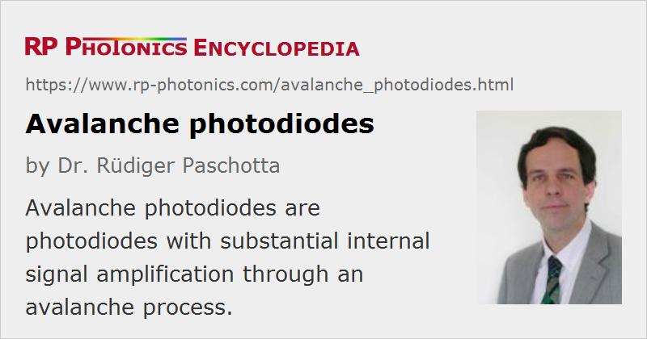

Avalanche Photodiodes
Acronym: APD; SPAD = single-photon avalanche diode
Definition: photodiodes with internal signal amplification through an avalanche process
More general term: photodiodes
German: Avalanche-Photodioden, Lawinen-Photodioden
Categories: photonic devices, light detection and characterization, optoelectronics, optical metrology
How to cite the article; suggest additional literature
Author: Dr. Rüdiger Paschotta
An avalanche photodiode is a semiconductor-based photodetector (photodiode) which is operated with a relatively high reverse voltage (typically tens or even hundreds of volts), sometimes just below breakdown. In this regime, carriers (electrons and holes) excited by absorbed photons are strongly accelerated in the strong internal electric field, so that they can generate secondary carriers. The avalanche process, which may take place over a distance of only a few micrometers, for example, effectively amplifies the photocurrent by a significant factor, although not as much as in a photomultiplier. Therefore, avalanche photodiodes can be used for very sensitive detectors, which need less electronic signal amplification and are thus less susceptible to electronic noise. However, the avalanche process itself is subject to quantum noise and amplification noise, which can offset the mentioned advantage. The excess noise is quantified with the excess noise factor F, which is the factor by which the electronic noise power is increased compared with that of an ideal photodetector.
Note that the amplification factor and thus the effective responsivity of an APD depends strongly on the reverse voltage, and may also substantially vary from device to device. Therefore, it is common to specify a certain voltage range within which all devices reach a certain responsivity. For precise measurements of low light powers, avalanche diodes are hardly suitable, since their responsivity is not nearly as well defined is that of a p–i–n diode, for example.
The detection bandwidth achievable with avalanche diodes can be quite high, although there is an inherent trade-off between bandwidth and amplification factor. On the other hand, the enhanced responsivity can allow the operation with a smaller shunt resistor than usable with an ordinary photodiode, and that effect may compensate a possible speed disadvantage of an avalanche diode.
Generally, the noise performance of photodetectors with APDs can be better than that of devices with ordinary p–i–n photodiodes when electronic noise is a limiting factor: the internal amplification in an APD reduces the influences of electronic noise. However, the above mentioned excess noise factor increases with increasing amplification factor, as obtained for increasing reverse voltage. Therefore, the reverse voltage is often chosen such that the multiplication noise approximately equals the noise of the electronic amplifier, because this minimizes the overall noise. The amount of excess noise depends on many factors: the magnitude of the reverse voltage, material properties (in particular, the ionization coefficient ratio κ), and the device design.
Silicon-based avalanche photodiodes are sensitive in the wavelength region from ≈ 450 to 1000 nm (sometimes up to 1100 nm), with the maximum responsivity occurring around 600–800 nm, i.e., at somewhat shorter wavelengths than for silicon p–i–n diodes. Depending on the device and the reverse voltage applied, the multiplication factor (also called gain) of silicon APDs can vary between 50 and 1000. For longer wavelengths up to roughly 1.7 μm, APDs based on germanium or indium gallium arsenide (InGaAs) are used. These have lower current multiplication factors of 10 to 40. InGaAs APDs are significantly more expensive than those based on germanium, but exhibit superior noise performance and a higher detection bandwidth. Their high absorption coefficient allows the use of a rather thin absorbing layer. Another possibility is to use germanium/silicon (GeSi) devices, where radiation is absorbed in germanium, and the carriers are transferred into a silicon region for charge multiplication [10, 14].
Less common semiconductor materials for APDs are gallium nitride (GaN) for ultraviolet light and HgCdTe for the mid infrared up to wavelength of ≈14 μm (used under cryogenic conditions).
Typical applications of avalanche photodiodes include receivers in optical fiber communications, range finding, imaging, high-speed laser scanners, laser microscopy, and optical-time domain reflectometers (OTDR).
Geiger Mode for Single Photon Counting
When operated in the so-called Geiger mode with carefully designed electronics, avalanche photodiodes can be used even for single photon counting with dark count rates well below 1 kHz and with a quantum efficiency of several tens of percent, sometimes even well above 50%. The Geiger mode means that the diode is operated slightly above the breakdown threshold voltage, where a single electron–hole pair (generated by absorption of a photon or by a thermal fluctuation) can trigger a strong avalanche. In the case of such an event, an electronic quenching circuit reduces the voltage at the diode below the threshold voltage for a short time, so that the avalanche is stopped and the detector is ready for detection of further photons after some recovery time of e.g. 100 ns. That dead time constitutes a substantial limitation of this technology. It limits the count rate to the order of 10 MHz, whereas an avalanche diode in linear mode (i.e., operated with lower reverse voltage) may be operated with a bandwidth of many gigahertz. So that such devices have a limited quantum efficiency, i.e., not every incident photon can trigger an avalanche.
Photon-counting APDs are also called SPADs = single-photon avalanche diodes. When optimized for high quantum efficiencies, they can be used in quantum optics experiments (for example, for quantum cryptography) and in some of the applications mentioned above if an extremely high responsivity is required. SPADs with optimized amplifier electronics are also available in CMOS integrated form, even as large photodiode arrays, e.g. for use as image sensors for single-photon 3D imaging via time-resolved detection [9].
Surprisingly, it is even possible to measure the number of photons absorbed within a certain short time interval in the active region of an avalanche photodiode [8]. For that purpose, it is necessary to precisely measure the rise of photocurrent at the beginning of the avalanche.
Avalanche Diode Modules
Avalanche diodes are available as part of modules which apart from the photodiode also contain additional electronic components. In particular, there can be a current amplifier (transimpedance amplifier) integrated into the package, which not only reduces the number of parts required on a circuit board, but also improves the noise performance and results in a better combination of bandwidth and responsivity. Some modules have been specifically optimized for use in optical fiber communications systems and are fiber-coupled. It is also possible to integrate the quenching electronics required for Geiger mode operation.
Silicon Photomultipliers
An important difference between an avalanche photodiode and a photomultiplier is that the latter has a much larger active area. However, it is possible to construct so-called silicon photomultipliers, containing arrays of silicon-based avalanche diodes, where the combined active area can be fairly large.
Apart from the large active area, silicon photomultipliers are also suitable for measuring photon numbers [12], even if the single diodes are not: one may count the total number of diodes which are triggered by a weak incident optical pulse. That number approximates well the photon number (multiplied with the quantum efficiency) provided that the probability of more than one photon hitting a single diode is sufficiently small.
Phototransistors
Another type of semiconductor-based photodetector, which also uses some kind of photocurrent amplification, is the phototransistor. Here, however, the amplification is based on different principles, and the operating characteristics are also quite different.
Suppliers
The RP Photonics Buyer's Guide contains 22 suppliers for avalanche photodiodes. Among them:
Questions and Comments from Users
Here you can submit questions and comments. As far as they get accepted by the author, they will appear above this paragraph together with the author’s answer. The author will decide on acceptance based on certain criteria. Essentially, the issue must be of sufficiently broad interest.
Please do not enter personal data here; we would otherwise delete it soon. (See also our privacy declaration.) If you wish to receive personal feedback or consultancy from the author, please contact him e.g. via e-mail.
By submitting the information, you give your consent to the potential publication of your inputs on our website according to our rules. (If you later retract your consent, we will delete those inputs.) As your inputs are first reviewed by the author, they may be published with some delay.
Bibliography
| [1] | R. J. McIntyre, “Multiplication noise in uniform avalanche diodes”, IEEE Trans. Electron Devices 13 (1), 164 (1966), doi:10.1109/T-ED.1966.15651 |
| [2] | J. S. Marsland, “On the effect of ionization dead spaces on avalanche multiplication and noise for uniform electric field”, J. Appl. Phys. 67 (4), 1929 (1990), doi:10.1063/1.345596 |
| [3] | M. M. Hayat et al., “Effect of dead space on gain and noise in Si and GaAs avalanche photodiodes”, IEEE J. Quantum Electron.28 (5), 1360 (1992), doi:10.1109/3.135278 |
| [4] | C. Hu et al., “Noise characteristics of thin multiplication region GaAs avalanche photodiodes”, Appl. Phys. Lett. 69 (24), 3734 (1996), doi:10.1063/1.117205 |
| [5] | A. Rochas et al., “Single photon detector fabricated in a complementary metal-oxide-semiconductor high-voltage technology”, Rev. Sci. Instrum. 74 (7), 3263 (2003), doi:10.1063/1.1584083 |
| [6] | D. Renker, “Geiger-mode avalanche photodiodes, history, properties and problems”, Nuclear Instrum. Meth. Phys. Research A 567, 48 (2006), doi:10.1016/j.nima.2006.05.060 |
| [7] | M. G. Liu et al., “Low dark count rate and high single-photon detection efficiency avalanche photodiode in Geiger-mode operation”, IEEE Photon. Technol. Lett. 19, 378 (2007) |
| [8] | B. E. Kardynal et al., “An avalanche-photodiode-based photon-number-resolving detector”, Nature Photon. 2, 425 (2008), doi:10.1038/nphoton.2008.101 |
| [9] | C. Niclass et al., “A 128 × 128 single-photon image sensor with column-level 10-bit time-to-digital converter array”, IEEE J. Solid-State Circuits 43 (12), 2977 (2008), doi:10.1109/JSSC.2008.2006445 |
| [10] | Y. Kang et al., “Monolithic germanium/silicon avalanche photodiodes with 340 GHz gain–bandwidth product”, Nature Photon. 3, 59 (2009), doi:10.1038/nphoton.2008.247 |
| [11] | S. Assefa et al., “Reinventing germanium avalanche photodetector for nanophotonic on-chip optical interconnects”, Nature 464, 80 (2010), doi:10.1038/nature08813 |
| [12] | M. Ramilli et al., “Photon-number statistics with silicon photomultipliers”, J. Opt. Soc. Am.B 27 (5), 852 (2010), doi:10.1364/JOSAB.27.000852 |
| [13] | B. F. Aull et al., “Large-format Geiger-mode avalance photodiode arrays and readout circuits”, IEEE J. Sel. Top. Quantum Electron 24 (2), 3800510 (2018), doi:10.1109/JSTQE.2017.2736440 |
| [14] | X. Zeng et al., “Silicon–germanium avalanche photodiodes with direct control of electric field in charge multiplication region”, Optica 6 (6), 772 (2019), doi:10.1364/OPTICA.6.000772 |
See also: photodiodes, photomultipliers, phototransistors, responsivity, photon counting, quantum efficiency, quantum noise
and other articles in the categories photonic devices, light detection and characterization, optoelectronics, optical metrology
|  |
If you like this page, please share the link with your friends and colleagues, e.g. via social media:
These sharing buttons are implemented in a privacy-friendly way!